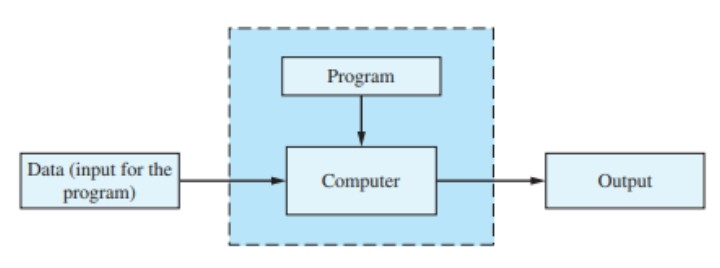
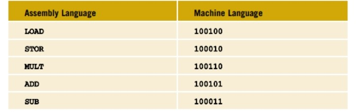
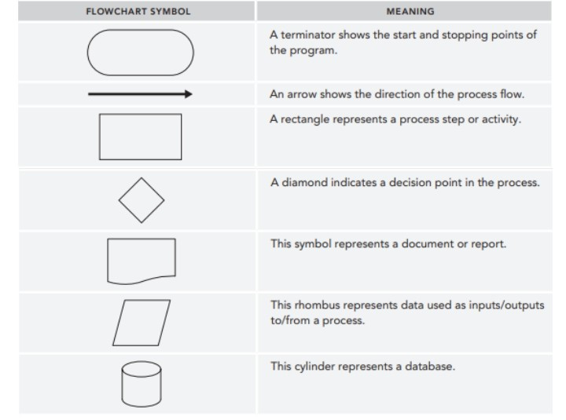
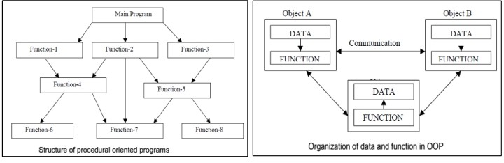

Module 1
Basic Element of JAVA
MODULE 1
A computer program, or a program, is a sequence of statements
intended to accomplish a task.
Programming is a process of planning and creating a program.
People who write programs - that is, programmers - find this
second view to be more useful when they design a program.

Figure 1 - Running Program
PROGRAMMING LANGUAGES, COMPILERS, AND INTERPRETERS
High-Level Language
Most modern programming languages are designed to be relatively
easy for people to understand and use. Such language are called high-level language.
Java is a high-level language
C++, C#, COBOL, Python, and Ruby are also high-level languages.
Compiler - A program that translates a program written in a
high-level language into the equivalent machine language.
(In the case of Java, this machine language is a bytecode)
Interpreters - translate and execute portions of code at a time.
Low-Level Language
Machine Language - The language that the computer can directly understand.
Assembly Language - is a symbolic form of machine language that is easier for people to read.
Assembler - A program that translates a program written in assembly
language into an equivalent program in machine languages are called a low-level languages.

PROCESSING A JAVA PROGRAM
Java has two types of programs - applications and applets.
An application is just a regular program.
An applet sounds though it would be a little apple,
but the name meant to convey the idea of a little application.
PROGRAMMING WITH THE PROBLEM ANALYSIS - CODING - EXECUTION CYCLE
Algorithm
- A step-by-step problem-solving process in which a solution
is arrived at in a finite amount of time.
- An algorithm is a set of directions for solving a problem.
Example 1.1
In this example, we design an algorithm to find the perimeter
and area of a rectangle. To find the perimeter and area of a rectangle,
you need to know the rectangle’s length and width. The perimeter and
area of a rectangle are then given by the following formulas.
perimeter = 2 * (length + width)
area = length * width
The algorithm to find the perimeter and area of the rectangle is:
Start
Get the length of the rectangle.
Get the width of the rectangle.
Find the perimeter using the following equation: perimeter = 2 * (length + width)
Find the area using the following equation: area = length * width
Stop
Two methods of representing an algorithm.
Pseudocode
✔ is a mixture of English and Java.
✔ is an artificial and informal language that helps programmers to develop algorithms.
Pseudocode is a “text-based”, detail (algorithmic) design tool.
Example 2
To check positive or negative number
BEGIN
READ num
IF (num>0) THEN
DISPLAY num is positive
ELSE
DISPLAY num is negative
END IF
END
Flowchart - is a pictorial representation of an algorithm.
Key Flowchart Modeling Concepts

PROGRAMMING METHODOLOGIES
The approach to analyzing such complex problems, planning for software development
and controlling the development process.
Types of Programming Methodologies
Procedural Programming
The Problem is broken down into procedures, or blocks of code
that perform one task each. All procedures are taken together
to form the whole program. It is suitable only for small programs
that have a low level of complexity.
Example - For a calculator program that does addition, subtraction, multiplication,
division, square root, and comparison, each of these operations can be developed
as separate procedures. In the main program, each procedure would be invoked on the basis
of the user’s choice.
Object-oriented Programming
Here, the solution revolves around entities or objects that are part of the problem.
The solution deals with how to store data related to the entities, how the entities behave,
and how they interact with each other to give a cohesive solution.
Example - If we have to develop a payroll management system,
we will have entities like employees, salary structure, leave rules,
etc. around which the solution must be built.
